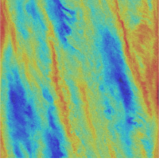

Gravitational Instabilities
|  |
Gas overdensities often take the form of spiral arms in the disk, but under the right conditions lead to the formation of gas giant planets or even brown dwarfs and stars. My job is to model the ideal mass and cooling constraints that lead to planets. To do this I use finite difference hydrodynamic simulation codes, like PENCIL and PLUTO, to respectively model the local and global effects relating to gravitational instabilities. Shearing box simulations of gravitational instability like the image to the left are useful for their simple boundary conditions and high resolution, but in 2D have recently been shown to inappropriately treat the self-gravity at short separations of high densities due to the thin disk approximation. For this reason, my future projects (both local and global) are focusing on the 3D treatment of GI. |
{kind=link}
Planet and Star Formation

|
The discovery of gas giant planets with large orbital distances, such as those around HR 8799, suggests that some planets may not be formed by core accretion. Gravitational instability has the potential to explain the existence of these planets and other companions while not competing with core accretion at shorter radii. Further research aims to clarify the solid enrichment and metallicity of companions formed by GI and whether the formation mechanism of an object can indeed by distinguished by their composition. Among my future projects I will focus on the formation conditions and evolution of instabilities formed in global disk simulations. Ideally this will mean combining high-resolution of fragments with global properties of the disk, such as accretion, migration, etc. Ideally, this would mean using adaptive mesh refinement to maintain high resolution of fragment formation and evolution while still maintaining coarse resolution of other regions of the disk. |
Gallery

|
||
|
Top-down look at a patch of a 2D gravitationally unstable disk. From the simulations of Baehr & Klahr (2015). |
When self-gravity is not strong enough to overcome pressure and shear stabilization, fragmentation is suppressed and gravitoturbulence remains. From Baehr et al. (2017) |
With rapid cooling, gravitational contraction wins out and a fragment results. Also from Baehr et al. (2017) |
{kind=link}
{kind=link}
|
|
|
Publications
Baehr H., Klahr H., Kratter K. M., 2017, The Fragmentation Criteria in Local Vertically Stratified Self-Gravitating Disks, The Astrophysical Journal, 484, 40
Baehr H., Klahr H., 2015, The Role of the Cooling Prescription in Disk Fragmentation: Numerical Convergence & the Critical Cooling Parameter in Self-Gravitating Disks, The Astrophysical Journal, 814 ,155